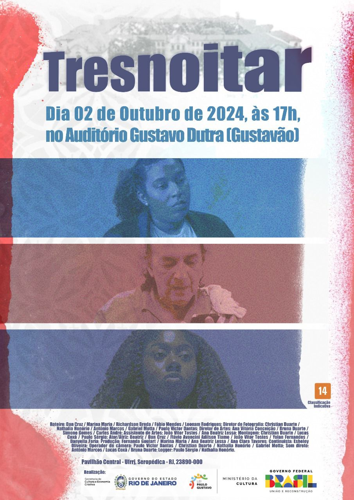

Sobre Mim
Olá! Eu sou Gabriel, um jovem de 19 anos do Rio de Janeiro, atualmente em Portugal, onde estou perseguindo meu sonho de trabalhar com audiovisual. Desde cedo, a paixão pelo cinema me motiva a ultrapassar barreiras e buscar novas oportunidades.
Minhas Habilidades
Direção de Fotografia
Edição de Vídeo
Roteirização
Gestão de Projetos
Projetos

Tresnoitar
Parte de um projeto social do governo brasileiro, tive o prazer de ser um dos diretores de fotografia deste curta-metragem exibido na Universidade Federal Rural do Rio de Janeiro.
Assistir ao filmeCurta Acadêmico
Além do trabalho como diretor de fotografia, ainda no ensino médio, tive a oportunidade de dirigir curtas-metragens para projetos acadêmicos.
Contato
Interessado em colaborar ou saber mais? Fique à vontade para entrar em contato!